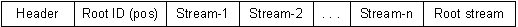

|
| |
The general structure of a direct file store, from the point of view of the physical file containing the store, is illustrated below.

The header is the content of the descriptor returned by the
Des() member function of TCheckedUid; this contains
the file store type and checksum; the length of the data is the size of a
TCheckedUid object. Note that TCheckedUid is not part
of the public API.
The header is followed by the root stream ID. As the value of a stream ID is also the offset of that stream from the start of the host, this gives the offset of the root stream.
The root stream ID is followed by all the streams; the root stream is the last stream.
Copyright ©2002 Symbian Ltd. 6.1-00174 |
|